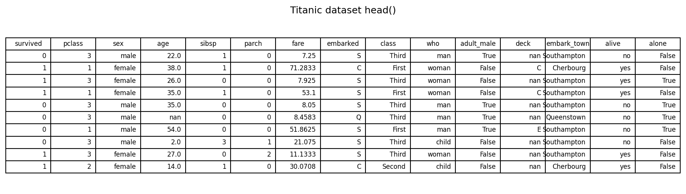
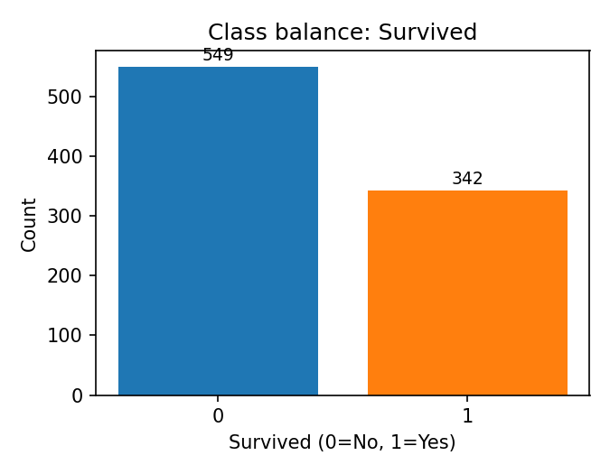
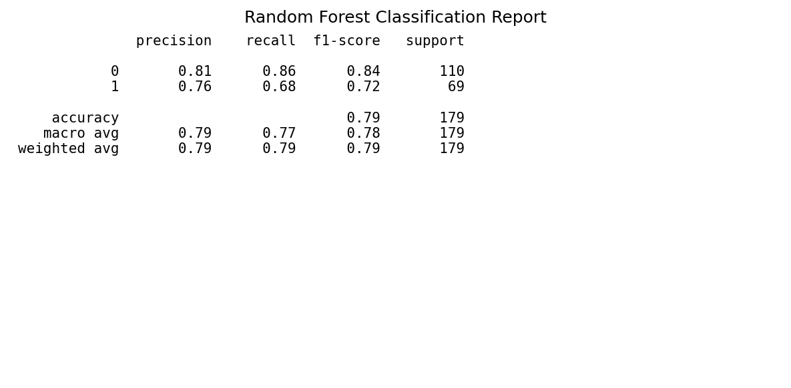
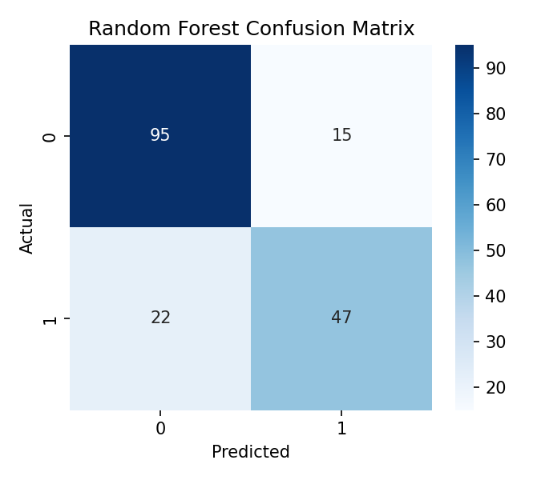
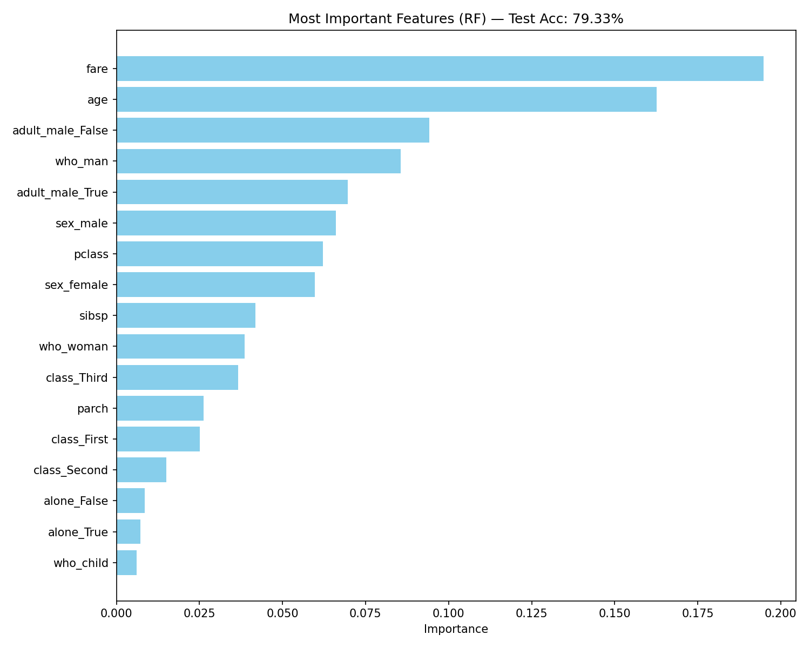
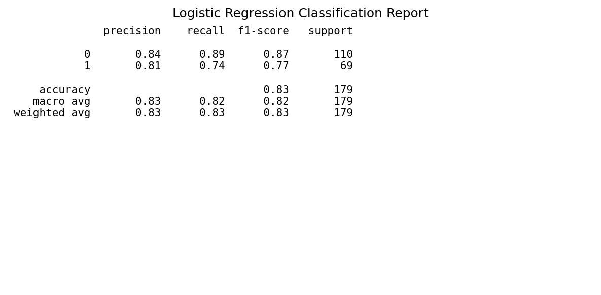
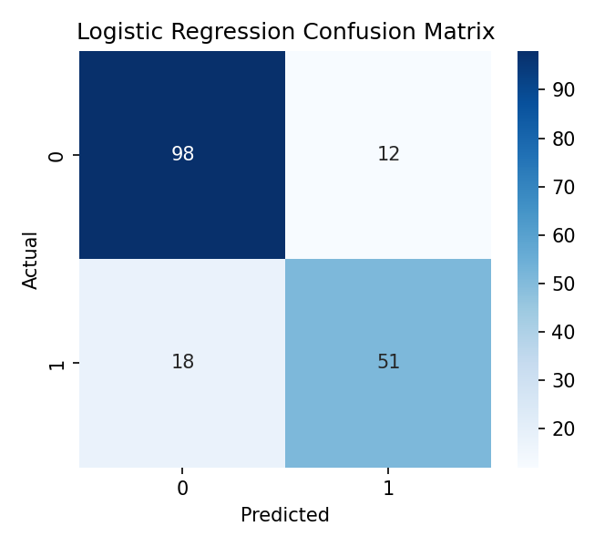
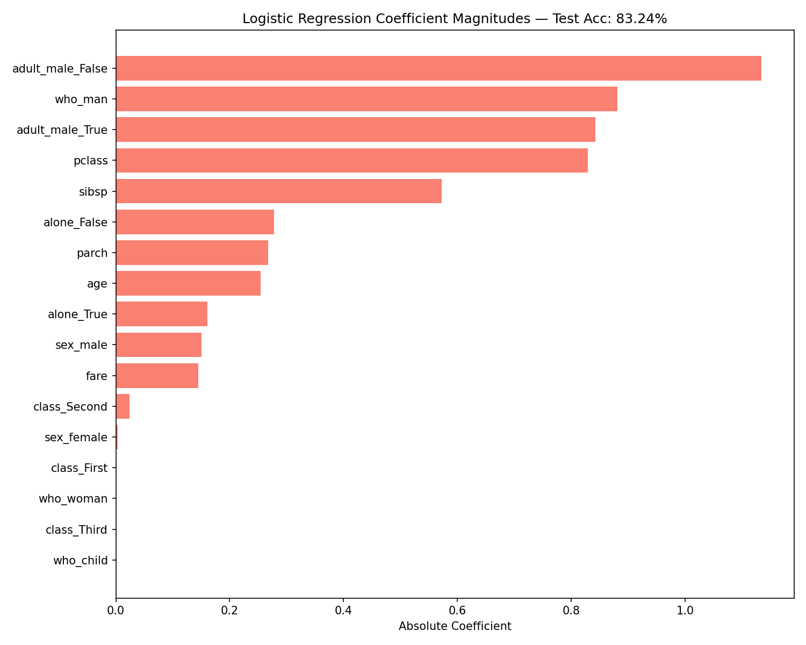

Titanic Survival Prediction
Machine Learning
AI Engineering
Classification
An attempt to predict Titanic passenger survival using classification techniques.
Estimated reading time: ~30 minutes
Practice Project: Titanic Survival Prediction
Objectives
- Build a classification pipeline with preprocessing and model selection
- Tune hyperparameters via cross-validation
- Compare Random Forest and Logistic Regression
- Interpret results via reports, confusion matrices, and feature importance
Dataset and features
We use the Titanic dataset (via Seaborn). The goal is to predict survived from a set of demographic and ticket features. A sample of the dataset is shown below.
# Imports
import matplotlib.pyplot as plt
import numpy as np
import pandas as pd
import seaborn as sns
from sklearn.model_selection import train_test_split, GridSearchCV, StratifiedKFold
from sklearn.preprocessing import StandardScaler, OneHotEncoder
from sklearn.pipeline import Pipeline
from sklearn.compose import ColumnTransformer
from sklearn.impute import SimpleImputer
from sklearn.ensemble import RandomForestClassifier
from sklearn.linear_model import LogisticRegression
from sklearn.metrics import classification_report, confusion_matrix
# Load dataset
titanic = sns.load_dataset('titanic')
titanic.head(10)
Target: survived (0 = No, 1 = Yes)
Example features used: - Numerical: pclass, age, sibsp, parch, fare - Categorical/boolean: sex, class, who, adult_male, alone
Class balance (counts of the target) is shown below.
# Class counts (baseline check)
titanic['survived'].value_counts().sort_index()
Modeling approach (no code)
- Split train/test with stratification.
- Preprocess using ColumnTransformer:
- Numerical: impute median + standardize
- Categorical: impute most_frequent + one-hot encode
- Model 1: RandomForestClassifier with grid search over depth and splits
- Model 2: LogisticRegression with grid search over penalty, solver, and class weights
- Evaluate on the held-out test set.
# Feature selection and target
features = ['pclass', 'sex', 'age', 'sibsp', 'parch', 'fare', 'class', 'who', 'adult_male', 'alone']
target = 'survived'
X = titanic[features]
y = titanic[target]
# Train/test split with stratification
X_train, X_test, y_train, y_test = train_test_split(
X, y, test_size=0.2, stratify=y, random_state=42
)
# Detect feature types
numerical_features = X_train.select_dtypes(include=['number']).columns.tolist()
categorical_features = X_train.select_dtypes(include=['object', 'category', 'bool']).columns.tolist()
# Preprocessing pipelines
numerical_transformer = Pipeline(steps=[
('imputer', SimpleImputer(strategy='median')),
('scaler', StandardScaler())
])
categorical_transformer = Pipeline(steps=[
('imputer', SimpleImputer(strategy='most_frequent')),
('onehot', OneHotEncoder(handle_unknown='ignore'))
])
preprocessor = ColumnTransformer(
transformers=[
('num', numerical_transformer, numerical_features),
('cat', categorical_transformer, categorical_features)
]
)Random Forest results
Classification report
# Random Forest pipeline and grid search
rf_pipeline = Pipeline(steps=[
('preprocessor', preprocessor),
('classifier', RandomForestClassifier(random_state=42))
])
rf_param_grid = {
'classifier__n_estimators': [100],
'classifier__max_depth': [None, 10, 20],
'classifier__min_samples_split': [2, 5]
}
cv = StratifiedKFold(n_splits=5, shuffle=True, random_state=42)
rf_model = GridSearchCV(
estimator=rf_pipeline,
param_grid=rf_param_grid,
cv=cv,
scoring='accuracy',
verbose=0
)
rf_model.fit(X_train, y_train)
y_pred_rf = rf_model.predict(X_test)
print(classification_report(y_test, y_pred_rf))
### Confusion matrix# Confusion matrix (RF)
conf_rf = confusion_matrix(y_test, y_pred_rf)
plt.figure(figsize=(4.5, 4))
sns.heatmap(conf_rf, annot=True, cmap='Blues', fmt='d')
plt.title('Random Forest Confusion Matrix')
plt.xlabel('Predicted')
plt.ylabel('Actual')
plt.tight_layout()
plt.show()
### Feature importances# Feature importances (RF)
rf_best = rf_model.best_estimator_
rf_importances = rf_best.named_steps['classifier'].feature_importances_
ohe_feature_names = rf_best.named_steps['preprocessor'] \
.named_transformers_['cat'] \
.named_steps['onehot'] \
.get_feature_names_out(categorical_features)
feature_names = numerical_features + list(ohe_feature_names)
imp_df = pd.DataFrame({'Feature': feature_names, 'Importance': rf_importances}) \
.sort_values(by='Importance', ascending=False)
top_n = min(25, len(imp_df))
plt.figure(figsize=(10, 8))
plt.barh(imp_df['Feature'].head(top_n)[::-1], imp_df['Importance'].head(top_n)[::-1], color='skyblue')
plt.title(f'Most Important Features (RF) — Test Acc: {rf_model.score(X_test, y_test):.2%}')
plt.xlabel('Importance')
plt.tight_layout()
plt.show()
Notes: - Random Forest highlights non-linear interactions and handles mixed features well. - Feature importances rank transformed (one-hot) and numeric features together.Logistic Regression results
Classification report
# Logistic Regression pipeline and grid
lr_pipeline = Pipeline(steps=[
('preprocessor', preprocessor),
('classifier', LogisticRegression(random_state=42, max_iter=1000))
])
lr_param_grid = {
'classifier__solver': ['liblinear'],
'classifier__penalty': ['l1', 'l2'],
'classifier__class_weight': [None, 'balanced']
}
lr_model = GridSearchCV(
estimator=lr_pipeline,
param_grid=lr_param_grid,
cv=cv,
scoring='accuracy',
verbose=0
)
lr_model.fit(X_train, y_train)
y_pred_lr = lr_model.predict(X_test)
print(classification_report(y_test, y_pred_lr))
### Confusion matrix# Confusion matrix (LR)
conf_lr = confusion_matrix(y_test, y_pred_lr)
plt.figure(figsize=(4.5, 4))
sns.heatmap(conf_lr, annot=True, cmap='Blues', fmt='d')
plt.title('Logistic Regression Confusion Matrix')
plt.xlabel('Predicted')
plt.ylabel('Actual')
plt.tight_layout()
plt.show()
### Coefficient magnitudes# Coefficient magnitudes (LR)
lr_best = lr_model.best_estimator_
coefficients = lr_best.named_steps['classifier'].coef_[0]
ohe_feature_names_lr = lr_best.named_steps['preprocessor'] \
.named_transformers_['cat'] \
.named_steps['onehot'] \
.get_feature_names_out(categorical_features)
feature_names_lr = numerical_features + list(ohe_feature_names_lr)
coef_df = pd.DataFrame({'Feature': feature_names_lr, 'Coefficient': coefficients}) \
.sort_values(by='Coefficient', key=lambda s: s.abs(), ascending=False)
top_n = min(25, len(coef_df))
plt.figure(figsize=(10, 8))
plt.barh(coef_df['Feature'].head(top_n)[::-1], coef_df['Coefficient'].abs().head(top_n)[::-1], color='salmon')
plt.title(f'Logistic Regression Coefficient Magnitudes — Test Acc: {lr_model.score(X_test, y_test):.2%}')
plt.xlabel('Absolute Coefficient')
plt.tight_layout()
plt.show()
Notes: - Coefficients reflect the linear contribution (after preprocessing). - Magnitudes are not directly comparable to tree-based importances, but provide directionality.Comparison and takeaways
- Both models achieve comparable accuracy on this dataset.
- Differences in feature rankings suggest correlated variables and overlapping information (e.g.,
sex,who_*,age). - Next steps: refine features, consider interaction terms, calibrate probabilities, and explore additional models.